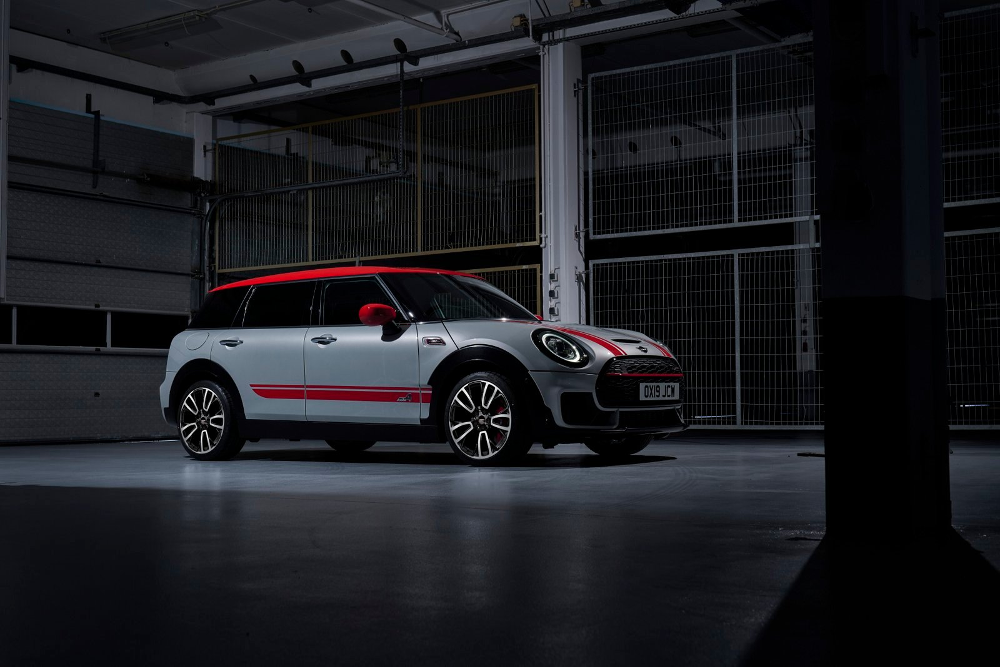
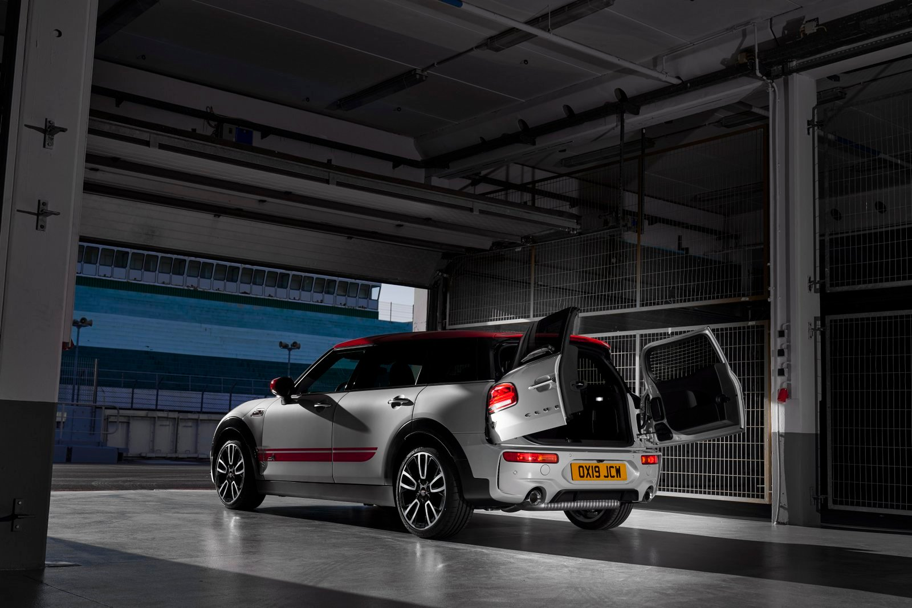
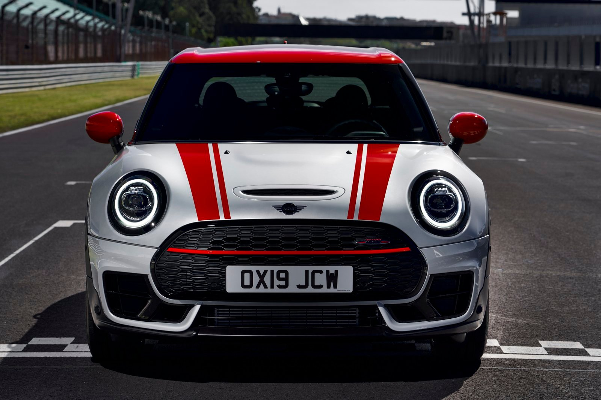
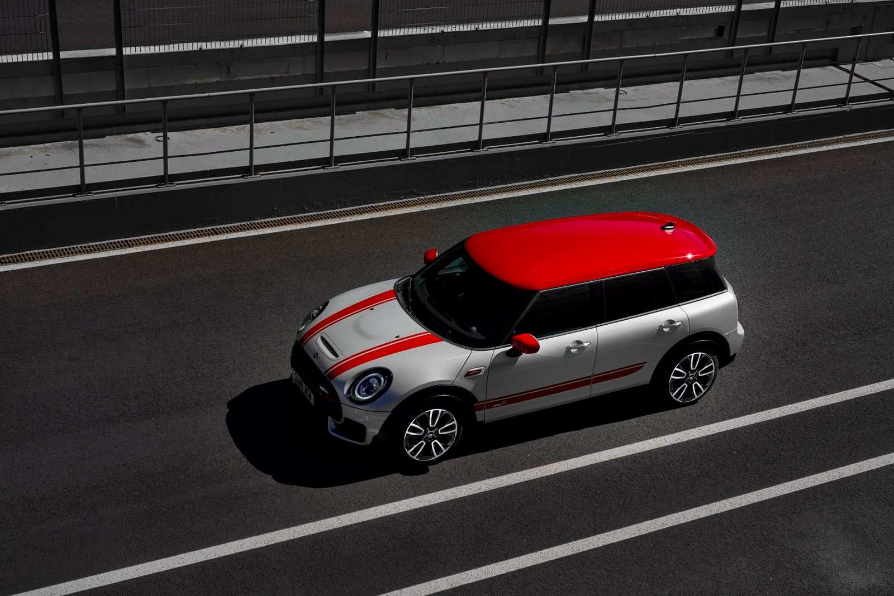
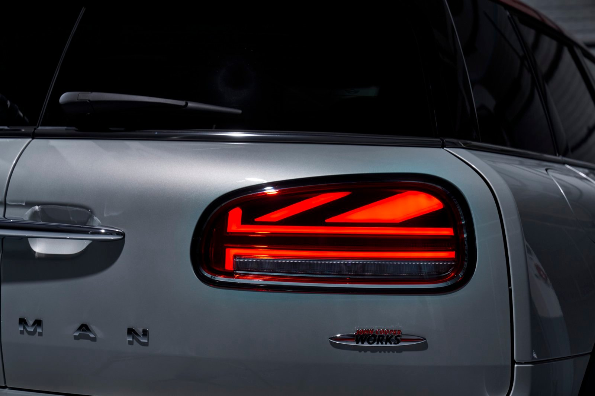
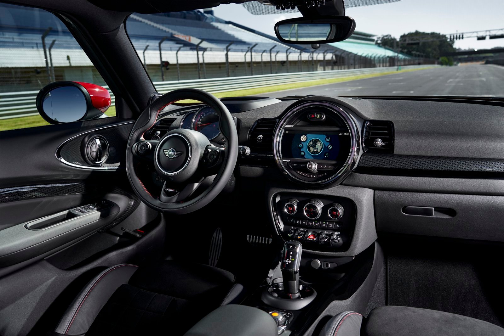

EXPLORE THE WORLD OF MINI
Điểm nổi bật nhất ở cả 2 chiếc xe này có lẽ nằm ở động cơ turbo 2.0 lít 4 xi-lanh cho khả năng sản sinh mức công suất lên đến 306 mã lực, mô-men xoắn cực đại đạt 450 Nm. Sức mạnh này giúp cho MINI John Cooper Works Clubman có thể tăng tốc từ 0 - 100 km/h chỉ trong 4,9 giây, trong khi tốn 5,1 giây để MINI John Cooper Works Countryman làm điều tương tự.
Trên thực tế, sức mạnh của xe mạnh hơn phiên bản cũ đến 75 mã lực. Cả 2 đều được trang bị hộp số thể thao 8 cấp Steptronic, hệ thống khóa vi sai trục trước, dẫn động 4 bánh toàn thời gian và khung gầm được thiết kế lại. Giảm xóc 2 chế độ với khả năng thích nghi với điều kiện địa hình sẽ là option thêm trên cả 2 mẫu Countryman và Clubman.
Về thiết kế, mặt trước của xe được làm lại với hốc hút gió lớn tạo vẻ hầm hố cho xe. Nhờ tinh chỉnh trọng tâm thấp hơn, khả năng vào cua của xe cũng sẽ tốt và ổn định hơn. Sức mạnh tăng cường đồng nghĩa với việc xe cũng sẽ được nâng cấp các tính năng an toàn và một trong số đó phải kể đến như bộ kẹp phanh 4 piston ở các bánh. Hệ thống ống xả thể thao của xe cũng được làm mới, cho âm thanh phấn khích hơn nhằm phù hợp với một chiếc xe hiệu suất cao như Clubman và Countryman John Cooper Works.
Để phân biệt với phiên bản thường thì ở cả mặt trước và sau của xe đều sẽ dập nổi logo JCW, thân xe nổi bật với các đường sơn đỏ, kính chiếu hậu, kẹp phanh và trần xe cũng được sơn đỏ như một nét đặc trưng của những chiếc xe phát triển bởi đội ngũ John Cooper Works. Clubman JCW sẽ được bán ra với bánh mâm kích thước 18 inch và có thể nâng cấp lên 19 innch. Trong khi đó, Countryman chỉ có 1 tùy chọn kích thước mâm là 18 inch.
Đèn pha và đèn hậu LED là tiêu chuẩn trên tất cả các mẫu xe, đặc biệt ở mẫu Clubman nổi bật với đèn hậu họa tiết quốc kỳ vương quốc Anh Union Jack - một sự gợi nhớ về nơi khai sinh ra dòng xe Mini.
Về hệ thống thông tin giải trí, Clubman và Countryman John Cooper Works 2020 đều sở hữu màn hình kích thước 6,5 inch và người dùng có thể bỏ thêm tiền để nâng cấp lên màn hình cảm ứng 8,8-inch.

ỐNG THẢI KHÍ XẢ KÉP CỦA MINI COOPER S 5 CỬA.
Ống thải khí thải kép, vì một óng không đủ cho chiếc xe mạnh mẽ này. Được làm bằng crom, chúng cũng tạo nên sự khác biệt.
A NOD TO OUR ROOTS.
Giống như MINI, Union Jack là biểu tượng vượt thời gian, với lịch sử lâu dài và phong phú. Tái hiện lại phong cách lái hiện đại, những dải đền hậu LED nổi bật với hai phần LED Union Jack, được bao quanh bởi viền chrome.
LIGHTEN UP THE DAY.
Chúng tôi đã làm sáng lại hệ thống đèn chiếu sáng phía trước LED và làm cho chúng trở thành góc cạnh hơn, sáng hơn. Đèn LED chiếu sáng ban ngày kết hợp cùng đèn báo rẽ nhấp nháy cả một vòng tròn đầy bắt mắt nhờ vào thiết kế đèn độc đáo - vỏ bên trong màu đen càng làm khuếch đại tính biểu tượng của MINI. Sức mạnh của đèn chiếu xa và gần được hỗ trợ bới ánh sáng bi-LED và đảm bảo tầm nhìn tốt hơn và an toàn hơn. Vì vậy, khi đèn sáng- là bạn đã sẵn sàng cho chuyến hành trình.
ĐÈN VIỀN NỘI THẤT
MINI 5 Cửa đi kèm với gói MINI Excitement. Bao gồm đèn viền nội thất cho phép bạn tùy chỉnh màu sắc trong khoan cabin. Vì vậy, trong khi ánh đèn thành phố chiếu sáng bên ngoài, bạn có thể tạo ra một không gian hoàn hảo bên trong xe của mình- và phản ánh tâm trạng hiện giờ của bạn hiện tại.
VÀO XE NHANH CHÓNG
Chiếc MINI Cooper S 5 DOOR đạt tốc độ 100 km / giờ trong 6,8 giây. 5 người có thể nhảy vào xe với tốc độ nhanh như vậy, nhờ có thêm một đôi cửa ở phía sau. Nhưng điều thú vị không dừng lại ở đó. Khoản cách giữa bánh trước và sau xe dài hơn cho phép hành khách chỗ ngồi phía sau thêm 72 mm để chân. Được thết kế thậm chí còn hấp dẫn hơn khi mà nó hoàn toàn có thể tiếp cận được. Nhưng bạn sẽ phải đạt tốc độ cực nhanh - xe có 192 mã lực để đạt được theo ý của nó. Không có chỗ cho người chậm chạm.
Tham khảo thêm: Tính toán chi phí lăn bánh.
EXPLORE THE WORLD OF MINI